Os principais módulos "científicos"¶
Embora não incluídas na distribuição oficial, disponibilizada em http://www.python.org, as seguintes bibliotecas foram criadas para adaptar (e aumentar) a linguagem Python com a funcionalidade necessária em muitas aplicações de natureza científica.
Estas bibliotecas são:
- numpy: objetos de tipo
array, que suportam operações vetoriais - scipy: muitas funções de cálculo numérico
- sympy: computação simbólica
- ipython: deu origem ao projeto Jupyter, que contem a plataforma "Jupyter notebooks"
- matplotlib: a grande bibloteca de gráficos científicos da linguagem Python
- pandas: objetos adequados ao tratamento de dados em larga escala
(
SerieseDataFrame)
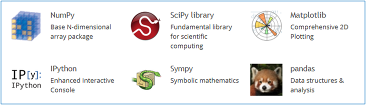
numpy¶
Esta é uma biblioteca fundamental na computação científica em Python e várias das outras bibliotecas dependem dela. Apesar de introduzir muitas funcionalidades interessantes à linguagem, a principal característica da biblioteca é proporcionar operações vetoriais a partir de um tipo de objetos denominado array
Operações "vectoriais" com arrays¶
import numpy as np
numbers = [0.0, 0.2, 0.5, 1.0, 1.1] x = np.array(numbers) print('x = ') print(x) y = 4 * x print('\ny = 4 * x =') print(y)
x = [ 0. 0.2 0.5 1. 1.1] y = 4 * x = [ 0. 0.8 2. 4. 4.4]
A função np.array() transformou a lista num objeto do tipo array.
Estes objetos suportam operações aritméticas "vetoriais": na expressão
y = 4 * x a multiplicação por 4 é aplicada a todos os elementos de
x. O resultado é também um array.
Por outro lado, as operações aritméticas entre dois arrays são realizadas elemento a elemento:
a = np.array([0.0, 0.2, -0.5, 1.0, 1.1]) b = np.array([0.0, 0.1, -1.0, 1.0, 1.0]) print('a = ', a) print('b = ', b) y = a + b print('\ny = a + b =') print(y)
a = [ 0. 0.2 -0.5 1. 1.1] b = [ 0. 0.1 -1. 1. 1. ] y = a + b = [ 0. 0.3 -1.5 2. 2.1]
Criação de arrays com as funções .array(), .arange() e .linspace()¶
x = np.array([1, 1.2, 3, 3.5]) print(x)
[ 1. 1.2 3. 3.5]
x = np.arange(1.5, 2.0, 0.1) print(x)
[ 1.5 1.6 1.7 1.8 1.9]
x = np.linspace(1, 2, 5) print(x)
[ 1. 1.25 1.5 1.75 2. ]
x = np.linspace(1, 2, 6) print('x') print(x) y = 4 * x**2 -3 print('\ny = 4 * x**2 -3') print(y)
x [ 1. 1.2 1.4 1.6 1.8 2. ] y = 4 * x**2 -3 [ 1. 2.76 4.84 7.24 9.96 13. ]
# só necessário em Jupyter notebooks %matplotlib inline from matplotlib import pyplot as pl
x = np.linspace(-2, 2, 100) y = 4 * x**3 -3 pl.grid() g = pl.plot(x, y)
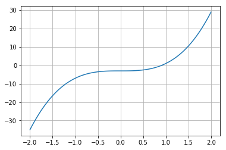
Problema: somar os primeiros 1000 quadrados perfeitos
print(sum(np.arange(1000)**2))
332833500
Dimensões (shape)¶
x = np.arange(1, 13) print(x) x.shape = (4,3) # significa 4 linhas e 3 colunas print('\nApós mudar "shape" para (4,3)\nx =\n{}'.format(x))
[ 1 2 3 4 5 6 7 8 9 10 11 12] Após mudar "shape" para (4,3) x = [[ 1 2 3] [ 4 5 6] [ 7 8 9] [10 11 12]]
Criação de arrays com .array(), .ones(), .zeros(), .eye(), .diag()¶
x = np.array( [[1, 1.2, 3], [1.3,5.1,1.3]] ) print(x) print('\nshape =', x.shape)
[[ 1. 1.2 3. ] [ 1.3 5.1 1.3]] shape = (2, 3)
x = np.ones((3,2)) print(x)
[[ 1. 1.] [ 1. 1.] [ 1. 1.]]
x = np.zeros((3,2)) print(x)
[[ 0. 0.] [ 0. 0.] [ 0. 0.]]
x = np.eye(3) print(x)
[[ 1. 0. 0.] [ 0. 1. 0.] [ 0. 0. 1.]]
x = np.diag([1.2, 3.2, 4.1, 6.3]) print(x)
[[ 1.2 0. 0. 0. ] [ 0. 3.2 0. 0. ] [ 0. 0. 4.1 0. ] [ 0. 0. 0. 6.3]]
Indexação a várias dimensões¶
x = np.linspace(1,20,20).reshape((5,4)) print(x)
[[ 1. 2. 3. 4.] [ 5. 6. 7. 8.] [ 9. 10. 11. 12.] [ 13. 14. 15. 16.] [ 17. 18. 19. 20.]]
a = x[3,1] print(x) print('\nx[3,1] =', a)
[[ 1. 2. 3. 4.] [ 5. 6. 7. 8.] [ 9. 10. 11. 12.] [ 13. 14. 15. 16.] [ 17. 18. 19. 20.]] x[3,1] = 14.0
a = x[3, :] print(x) print('\nx[3, :] =', a)
[[ 1. 2. 3. 4.] [ 5. 6. 7. 8.] [ 9. 10. 11. 12.] [ 13. 14. 15. 16.] [ 17. 18. 19. 20.]] x[3, :] = [ 13. 14. 15. 16.]
a = x[1:4, 1:4] print(x) print('\nx[1:4, 1:4] =') print(a)
[[ 1. 2. 3. 4.] [ 5. 6. 7. 8.] [ 9. 10. 11. 12.] [ 13. 14. 15. 16.] [ 17. 18. 19. 20.]] x[1:4, 1:4] = [[ 6. 7. 8.] [ 10. 11. 12.] [ 14. 15. 16.]]
Mas os slices de arrays unidimensionais também existem, tal como nas
listas:
x =np.arange(0, 1.1, 0.1)[2:] print(x)
[ 0.2 0.3 0.4 0.5 0.6 0.7 0.8 0.9 1. ]
Problema: mostrar que as diferenças entre os quadrados perfeitos sucessivos são os numeros ímpares
quads = np.arange(12)**2 print(quads) difs = quads[1:] - quads[0:-1] print(difs)
[ 0 1 4 9 16 25 36 49 64 81 100 121] [ 1 3 5 7 9 11 13 15 17 19 21]
Indexação booleana¶
x = np.linspace(1, 10, 6) print('x =', x) a = x < 7 print('\nx < 7') print(a) y = x[x < 7] print('\nx[x < 7]') print(y)
x = [ 1. 2.8 4.6 6.4 8.2 10. ] x < 7 [ True True True True False False] x[x < 7] [ 1. 2.8 4.6 6.4]
Problema: somar as raízes quadradas dos números inteiros até 100, mas só as que sejam números inteiros
roots = np.arange(0,101)**0.5 # usando a função np.trunc() s = sum(roots[np.trunc(roots) == roots]) print(s)
55.0
Indexação com listas de inteiros ou outros arrays¶
x = np.linspace(5, 15, 6) print('x =', x) i = [1,4,5] print('\ni =', i) y = x[i] print('\nx[i] =', y)
x = [ 5. 7. 9. 11. 13. 15.] i = [1, 4, 5] x[i] = [ 7. 13. 15.]
Funções associadas a arrays¶
Os objetos do tipo array possuem muitas funções associadas.
Algumas são:
.sum()que calcula a soma dos elementos.mean()que calcula a média dos elementos.var()que calcula a variância dos elementos.std()que calcula o desvio padrão dos elementos.prod()que calcula o produto dos elementos.ptp()(peak to peak) que calcula o máximo - mínimo.cumsum()que calcula a soma cumulativa dos elementos.cumprod()que calcula o produto cumulativo dos elementos
No caso da aplicação destas funções a arrays multidimensionais, podemos especifica um "eixo" para aplicar o cálculo.
Vejamos a aplicação da função .sum() a um array unidimensional:
a = np.linspace(1,20,20).sum() print(a)
210.0
E agora 3 maneiras de aplicar a função .sum() a um array
multidimensional
# Como se fosse unidimensional # aplicando a todos os elementos x = np.linspace(1,20,20).reshape((5,4)) print(x) s = x.sum() print('\n', s)
[[ 1. 2. 3. 4.] [ 5. 6. 7. 8.] [ 9. 10. 11. 12.] [ 13. 14. 15. 16.] [ 17. 18. 19. 20.]] 210.0
# Ao longo do eixo 0 x = np.linspace(1,20,20).reshape((5,4)) print(x) s = x.sum(axis=0) print('\n', s)
[[ 1. 2. 3. 4.] [ 5. 6. 7. 8.] [ 9. 10. 11. 12.] [ 13. 14. 15. 16.] [ 17. 18. 19. 20.]] [ 45. 50. 55. 60.]
# Ao longo do eixo 1 x = np.linspace(1,20,20).reshape((5,4)) print(x) s = x.sum(axis=1) print('\n', s)
[[ 1. 2. 3. 4.] [ 5. 6. 7. 8.] [ 9. 10. 11. 12.] [ 13. 14. 15. 16.] [ 17. 18. 19. 20.]] [ 10. 26. 42. 58. 74.]
Problema: mostrar que a série alternada dos inversos converge para log 2
i = np.arange(1,80) termos = (-1)**(i+1) * 1/i s = termos.cumsum() print(s[:4])
[ 1. 0.5 0.83333333 0.58333333]
i = np.arange(1,80) termos = (-1)**(i+1) * 1/i s = termos.cumsum() pl.ylim(0.6, 0.8) pl.axhline(np.log(2), color='red') g = pl.plot(i,s, '-o')
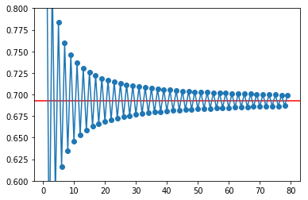
# Agora com 300 termos i = np.arange(1, 300) termos = (-1)**(i+1) * 1/i s = termos.cumsum() pl.ylim(0.6, 0.8) pl.axhline(np.log(2), color='red') g = pl.plot(i,s, alpha=0.7)
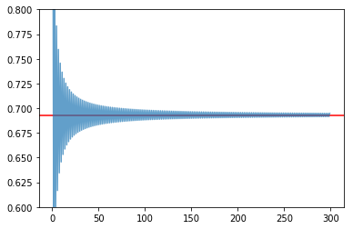
Exemplos de algumas funcionalidade do numpy.¶
Geração de números aleatórios. (sub-módulo numpy.random)¶
Obter valores aleatórios das seguintes distribuições:
Poisson (usada para número de ocorrências durante um intervalo)
p(x, \lambda) = \frac{e^{-x} \lambda^x}{x!} com x = 0, 1, 2, ...
Normal (0,1)
f(x) = \frac{1}{\sqrt{2\pi}} e^{-x^2 / 2} com x \in [-\infty, \infty]
print('20 valores aleatórios da dist. de Poisson') print(' com lambda = 3') x = np.random.poisson(3, 20) print(x)
20 valores aleatórios da dist. de Poisson com lambda = 3 [6 2 0 4 1 9 1 4 2 5 0 3 4 7 7 2 3 5 1 4]
print('5 valores aleatórios da distribuição N(0,1)') x = np.random.randn(5) print(x)
5 valores aleatórios da distribuição N(0,1) [ 1.04529894 -0.26523157 0.94498444 0.63413472 -1.38915953]
Problema: "Provar" que a média e a variância da distribuição de Poisson são ambas iguais a \lambda.
sample = np.random.poisson(3, 100000) print('Média = ', sample.mean()) print('Variância =', sample.var())
Média = 2.99868 Variância = 3.0185382576
Problema: Mostar numericamente o Teorema do Limite Central para uma distribuição de Poisson.
# Distribuição de médias de amostras de 2 sample = np.random.poisson(3, (100000,2) ) means = sample.mean(axis=1) unique, counts = np.unique(means, return_counts=True) pl.vlines(unique, [0], counts, color='darkblue') g = pl.plot(unique, counts, 'o')
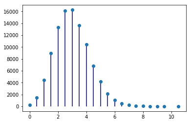
# Distribuição de médias de amostras de 20 sample = np.random.poisson(3, (100000,20) ) means = sample.mean(axis=1) unique, counts = np.unique(means, return_counts=True) pl.vlines(unique, [0], counts, color='skyblue') g = pl.plot(unique, counts, 'o')
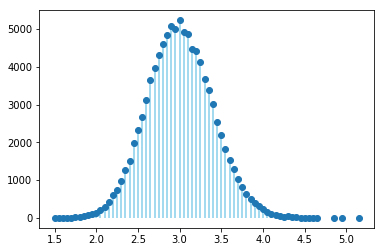
Matrizes e álgebra linear¶
A = np.matrix([[1, 2, 3], [2, 1, 6], [1, 7, 4]]) print('A\n', A) B = np.matrix([1,2,3]).T print('B\n', B) C = A * B print('\nC = A * B\n', C)
A [[1 2 3] [2 1 6] [1 7 4]] B [[1] [2] [3]] C = A * B [[14] [22] [27]]
A = np.matrix([[1.0, 2, 3], [2, 1, 6], [1, 7, 4]]) B = np.matrix([1,2,3]).T X = np.linalg.solve(A, B) print('Solução de A*X = B') print(X)
Solução de A*X = B [[-5.] [ 0.] [ 2.]]
sympy¶
Símbolos e álgebra básica¶
from sympy import Symbol x = Symbol('x') y = Symbol('y') print(x + y + x -y)
2*x
a = (x+y)**2 print(a) print(a.expand()) print(a.subs(x, 1).expand()) print(a.subs(x, 1).expand().subs(y, 1))
(x + y)**2 x**2 + 2*x*y + y**2 y**2 + 2*y + 1 4
Limites¶
from sympy import Symbol, limit, diff, integrate, sin, oo x = Symbol('x') y = Symbol('y') print(limit(sin(x)/x, x, 0)) print(limit(x, x, oo)) print(limit(1/x, x, oo))
1 oo 0
Derivadas e integrais¶
print(diff(sin(x), x)) print(diff(sin(2*x), x)) print('----------------') expr = 2**x + x**2 -3 print(expr) print(diff(expr, x)) print(diff(expr, x, 3))
cos(x) 2*cos(2*x) ---------------- 2**x + x**2 - 3 2**x*log(2) + 2*x 2**x*log(2)**3
print(integrate(sin(x), x))
-cos(x)
Exemplo do uso de numpy e scipy: regressão linear.¶
import numpy as np %matplotlib inline from matplotlib import pyplot as pl
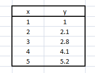
x = np.array([1.0, 2.0, 3.0, 4.0, 5.0]) y = np.array([1.0, 2.1, 2.8, 4.1, 5.2])
p = pl.plot(x,y, 'o')
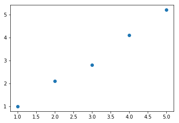
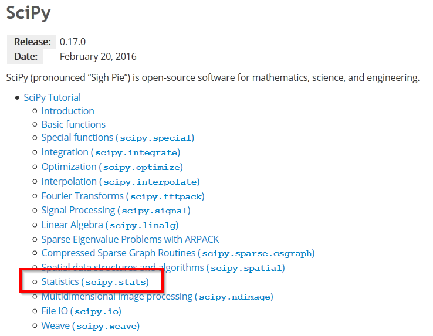
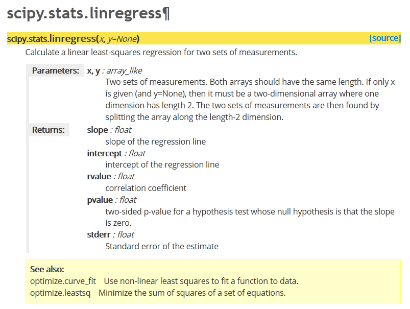
from scipy.stats import linregress
m, b, R, p, SEm = linregress(x, y)
m: decliveb: ordenada na origemR: coeficiente de correlação (de Pearson)p: p-value do teste F em que H0: y = const, independente de xSEm: erro padrão do declive
Falta calcular o SE da ordenada na origem.
def lin_regression(x, y): """Simple linear regression (y = m * x + b + error).""" m, b, R, p, SEm = linregress(x, y) # need to compute SEb, linregress only computes SEm n = len(x) SSx = np.var(x, ddof=1) * (n-1) # this is sum( (x - mean(x))**2 ) SEb2 = SEm**2 * (SSx/n + np.mean(x)**2) SEb = SEb2**0.5 return m, b, SEm, SEb, R, p
m, b, Sm, Sb, R, p = lin_regression(x, y)
print('m = {:>.4g} +- {:6.4f}'.format(m, Sm)) print('b = {:>.4g} +- {:6.4f}\n'.format(b, Sb)) print('R2 = {:7.5f}'.format(R**2)) print('p of test F : {:<8.6f}'.format(p))
m = 1.04 +- 0.0503 b = -0.08 +- 0.1669 R2 = 0.99302 p of test F : 0.000248
pl.plot(x,y, 'o') pl.xlim(0,None) pl.ylim(0, None) # desenho da recta, dados 2 pontos extremos # escolhemos a origem e o max(x) x2 = np.array([0, max(x)]) pl.plot(x2, m * x2 + b, '-') # Anotação sobre o gráfico: ptxt = 'm = {:>.4g} +- {:6.4f}\nb = {:>.4g} +- {:6.4f}\nR2 = {:7.5f}' t = pl.text(0.5, 4, ptxt.format(m, Sm, b, Sb, R**2), fontsize=14)
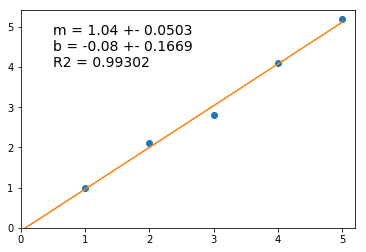
Example: Simulation of the acid-base changes in an amino-acid solution¶
Here we make a simple simulation of the changes in pH and charge distribution of an amino acid in solution.
Focus will be on Glycine first, but the derivarion and the analysis can easily be applied to the other amino acids if the values of the pKa are known.
Derivation of the relevant equations¶
We first seek to calculate the charge distribution of glycine in solution as a function of pH.
At any pH, we can find glycine as a mixture of three species:
NH^{+}_3 - CH_2 - COOH the positive form, here represented by G^+.
NH_2 - CH_2 - COOH the neutral form, here represented by G^0.
NH_2 - CH_2 - COO^{-} the negative form, here represented by G^-.
Total of different forms is constant:
G^+ + G^0 + G^- = G_{tot}
There are two equilibria
pH = pK1 + log_{10} \left( \frac{G^0}{G^+} \right)
pH = pK2 + log_{10} \left( \frac{G^-}{G^0} \right)
We need to calculate all the forms of the amino acid as a function of pH.
Let's make
f1 = \frac{G^0}{G^+} and f2 = \frac{G^-}{G^0}
Then
f1 = 10^{pH - pK1} and f2 = 10^{pH - pK2}
Now, using these in the total amino acid conservation equation,
G^+ + G^+ f1 + G^+ f1 f2 = G_{tot}
or
G^+ = \frac{G_{tot}}{1 + f1 + f1f2}
And, by definition of f1 and f2,
G^0 = G^+ f1
G^- = G^0 f2
The sequence of calculations is then
pH \longrightarrow f1, f2 \longrightarrow G^+ \longrightarrow G^0 \longrightarrow G^-
An additional problem is the calculation of the amount of OH^- than must be used to drive the solution to a given pH, starting from a very low pH solution
This is simply
nOH^- = nG^0 + 2 nG^-
Analysis¶
Computation¶
Make the necessary imports
from numpy import linspace
Use derived equations to compute species distribution and the amount of base necessary to change the solution into a given pH value.
pK1 = 2.3 pK2 = 9.6 Gt = 0.1 # M pH = linspace(0, 14, 14000) f1 = 10.0**(pH - pK1) f2 = 10.0**(pH - pK2) Gplus = Gt / (1 + f1 + f1*f2) Gzero = f1 * Gplus Gminus = f2 * Gzero nOH = Gzero + 2 * Gminus
Plots¶
Obtain a plot of the distribution of the three different species of the amino acid as a function of pH.
%matplotlib inline # This is to be used in IPython/Jupyter notebooks # This makes plots appear "inline" as part of cell's outputs.
import matplotlib.pyplot as pl pl.plot(pH, Gplus) pl.plot(pH, Gzero) pl.plot(pH, Gminus) pl.ylabel('concentration') pl.xlabel('$pH$') pl.legend(('$G^+$','$G^0$', '$G^-$')) t = pl.title('Species distribution')
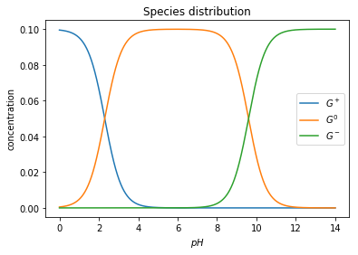
Plot also the amount of base necessary to change the pH of the solution, but exchange the x and y axis, so that it looks like we are titrating the solution.
pl.plot(nOH, pH) pl.ylabel('$pH$') pl.xlabel('$nOH^{-}$') pl.grid()
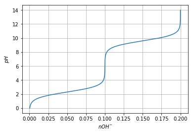
Pandas¶
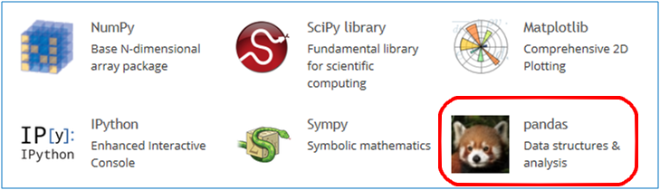
web site: (pandas.pydata.org)
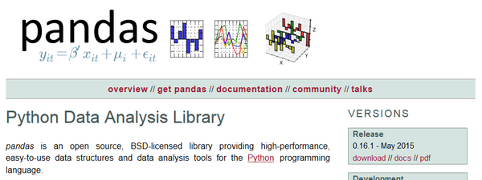
Series¶
Seriesis a one-dimensional labeled array capable of holding any data type (integers, strings, floating point numbers, Python objects, etc.). The axis labels are collectively referred to as the index.
import pandas as pd
Uma Série (Series) é um conjunto (ordenado) de valores, mas cada valor é associado a uma "etiqueta" (label).
Ao conjunto das etiquetas dá-se o nome de "índice".
Quando construímos uma Série, usando a função Series(), podemos
indicar o índice.
s = pd.Series([1.4, 2.2, 3.2, 6.5, 12], index=['a', 'b', 'c', 'd', 'e']) print(s)
a 1.4 b 2.2 c 3.2 d 6.5 e 12.0 dtype: float64
Se não indicarmos um índice, o conjunto dos inteiros sucessivos será o índice.
s = pd.Series([1.4,2.2,3.2,6.5,12]) print(s)
0 1.4 1 2.2 2 3.2 3 6.5 4 12.0 dtype: float64
As Séries podem ser construídas a partir de um dicionário, em que as chaves são o índice.
d = {'a' : 0., 'b' : 1., 'c' : 2.} s = pd.Series(d) print(s)
a 0.0 b 1.0 c 2.0 dtype: float64
Podemos, mesmo neste caso, indicar um índice. Caso o índice tenha elementos para além das chaves do dicionário, haverá valores em falta.
d = {'a' : 0., 'b' : 1., 'c' : 2.} s = pd.Series(d, index=['b', 'c', 'd', 'a']) print(s)
b 1.0 c 2.0 d NaN a 0.0 dtype: float64
O uso do marcador NaN para indicar valores em falta e a existência
de muitas funções de análise que levam em conta valores em falta são uma
característica muito poderosa do módulo pandas.
Funções descritivas dos valores¶
As Séries têm algumas funções de estatística descritiva de grande utilidade.
Note-se que, em geral, os valores em falta são ignorados nos cálculos.
d = {'a' : 0., 'b' : 1., 'c' : 2.} s = pd.Series(d, index=['b', 'c', 'd', 'a']) print(s) print('\nMédia =', s.mean())
b 1.0 c 2.0 d NaN a 0.0 dtype: float64 Média = 1.0
d = {'a' : 0., 'b' : 1., 'c' : 2.} s = pd.Series(d, index=['b', 'c', 'd', 'a']) print(s) print('-----') print(s.describe())
b 1.0 c 2.0 d NaN a 0.0 dtype: float64 ----- count 3.0 mean 1.0 std 1.0 min 0.0 25% 0.5 50% 1.0 75% 1.5 max 2.0 dtype: float64
d = {'a' : 0., 'b' : 1., 'c' : 2.} s = pd.Series(d, index=['b', 'c', 'd', 'a']) print(s.cumsum())
b 1.0 c 3.0 d NaN a 3.0 dtype: float64
d = {'a' : 0., 'b' : 1., 'c' : 2.} s = pd.Series(d, index=['b', 'c', 'd', 'a']) print(s.values) print(s.index.values)
[ 1. 2. nan 0.] ['b' 'c' 'd' 'a']
Indexação e operações vetoriais¶
As Séries podem ser usadas com indexação por números inteiros,
comportando-se como uma lista ou um array do numpy.
A função len()também funciona com séries.
d = {'a' : 0., 'b' : 1., 'c' : 2.} s = pd.Series(d, index=['b', 'c', 'd', 'a']) print(len(s)) print(s[0]) print(s[-1])
4 1.0 0.0
As Séries podem ser usadas como dicionários: as etiquetas comportam-se como chaves e são usadas para indexar uma Série. para obter um valor (e também para modificar um valor).
Tal como nos dicionários, o operador in testa a existência de uma
etiqueta.
d = {'a' : 0., 'b' : 1., 'c' : 2.} s = pd.Series(d, index=['b', 'c', 'd', 'a']) print(s) print('-----------') print(s['b']) print(s.c) # notação abreviada print('z' in s) print('d' in s)
b 1.0 c 2.0 d NaN a 0.0 dtype: float64 ----------- 1.0 2.0 False True
Mas as Séries são muito mais poderosas: elas comportam-se como arrays
do módulo numpy. Podemos usar:
- slices
- operações vetoriais.
d = {'a' : 0.5, 'b' : 1.0, 'c' : 3.0, 'e': 1.8} s = pd.Series(d, index=['b', 'c', 'd', 'e', 'a']) print(s) print(s[:3])
b 1.0 c 3.0 d NaN e 1.8 a 0.5 dtype: float64 b 1.0 c 3.0 d NaN dtype: float64
d = {'a' : 0.5, 'b' : 1.0, 'c' : 3.0, 'e': 1.8} s = pd.Series(d, index=['b', 'c', 'd', 'e', 'a']) print(s) print(s**2)
b 1.0 c 3.0 d NaN e 1.8 a 0.5 dtype: float64 b 1.00 c 9.00 d NaN e 3.24 a 0.25 dtype: float64
d = {'a' : 0.5, 'b' : 1.0, 'c' : 3.0, 'e': 1.8} s = pd.Series(d, index=['b', 'c', 'd', 'e', 'a']) print(s) print(s[s > 1.1])
b 1.0 c 3.0 d NaN e 1.8 a 0.5 dtype: float64 c 3.0 e 1.8 dtype: float64
Também muito poderoso é o facto de que, quando aplicamos operações vetoriais sobre Séries (por exemplo, na soma de duas séries), os valores são "alinhados" pelos respetivos labels antes da operação. Vejamos estas duas séries:
s1 = pd.Series({'a' : 0.5, 'b' : 1.0, 'e': 1.8}) s2 = pd.Series({'a' : 0.5, 'b' : 1.0, 'f': 1.8}) print('Soma') print(s1 + s2)
Soma a 1.0 b 2.0 e NaN f NaN dtype: float64
A soma das duas Séries resulta numa Série em que todas as etiquetas estão presentes (união de conjuntos).
As que só existirem numa das Séries ou as que, numa das Séries, têm o
valor NaN, terão o valor NaN no resultado final.
A função .dropna() permite eliminar os valores em falta.
s1 = pd.Series({'a' : 0.5, 'b' : 1.0, 'e': 1.8}) s2 = pd.Series({'a' : 0.5, 'b' : 1.0, 'f': 1.8}) s3 = s1 + s2 print(s3.dropna())
a 1.0 b 2.0 dtype: float64
DataFrame¶
DataFrameis a 2-dimensional labeled data structure with columns of potentially different types. You can think of it like a spreadsheet or SQL table, or a dict of Series objects. It is generally the most commonly used pandas object.
Uma DataFrame é um quadro bidimensional, em que cada coluna se comporta como uma Série, mas em que existe um índice comum a todas as colunas.
Para ilustar o uso de uma DataFrame, vamos ler e processar a
informação da UniProt sobre a levedura S. cerevisiae.
A DataFrame terá as colunas "ac", "rev", "n" e
"sequence"
def get_prots(filename): with open(filename) as big: tudo = big.read() return [p for p in tudo.split('//\n') if len(p) != 0] prots = get_prots('uniprot_s_cerevisiae.txt') def process_prot(p): linhas = p.split('\n') partes = linhas[0].split() reviewed = partes[2][0:-1] naa = int(partes[3]) ac = linhas[1].split()[1][0:-1] for i in range(len(linhas)-1, 0, -1): if linhas[i].startswith('SQ'): break s = ''.join(linhas[i+1:]) seq = ''.join(s.split()) return {'ac':ac, 'rev':reviewed, 'n':naa, 'seq':seq} pinfo = [process_prot(p) for p in prots] print('Numero total de proteínas: {}'.format(len(pinfo))) print('A primeira proteína tem', pinfo[0]['n'], 'aminoácidos')
Numero total de proteínas: 6816 A primeira proteína tem 316 aminoácidos
Podemos construir uma DataFrame a partir de uma lista de dicionários.
As chaves dos dicionários serão as colunas.
prots = pd.DataFrame(pinfo) print(len(prots)) prots[:3]
6816
| ac | n | rev | seq | |
|---|---|---|---|---|
| 0 | P29703 | 316 | Reviewed | MEEYDYSDVKPLPIETDLQDELCRIMYTEDYKRLMGLARALISLNE... |
| 1 | P36001 | 430 | Reviewed | MDDISGRQTLPRINRLLEHVGNPQDSLSILHIAGTNGKETVSKFLT... |
| 2 | P08524 | 352 | Reviewed | MASEKEIRRERFLNVFPKLVEELNASLLAYGMPKEACDWYAHSLNY... |
Para inspeção rápida, as funções .head() e .tail() apresentam o
início e o fim da DataFrame
prots = pd.DataFrame(pinfo) #prots.head() prots.tail()
| ac | n | rev | seq | |
|---|---|---|---|---|
| 6811 | A0A1S0T058 | 133 | Unreviewed | MSETCSSSLALLHKILHIHSHTPSVYYNICISVRILTSERLQCFFF... |
| 6812 | A0A1S0T090 | 108 | Unreviewed | MYKVSACGVRIMSGISEIWIGELRDYKYALRLDREEYPAVLVYEYD... |
| 6813 | A0A1S0T072 | 145 | Unreviewed | MAILLPLKSILPWCCITFSFLLSSSGSISHSTASSSITLTKSSKPT... |
| 6814 | A0A1S0T069 | 239 | Unreviewed | MMPTYLGKLTWSYFFTTLGLACAYNVTEQMEFDQFKSDYLACLAPE... |
| 6815 | A0A1S0T004 | 163 | Unreviewed | MEMHWITLVAFIATFFNLAATSINNSSLPDVDLTNPLRFFTNIPAG... |
Podemos mudar o índice para uma das colunas.
prots = prots.set_index('ac') prots.head()
| n | rev | seq | |
|---|---|---|---|
| ac | |||
| P29703 | 316 | Reviewed | MEEYDYSDVKPLPIETDLQDELCRIMYTEDYKRLMGLARALISLNE... |
| P36001 | 430 | Reviewed | MDDISGRQTLPRINRLLEHVGNPQDSLSILHIAGTNGKETVSKFLT... |
| P08524 | 352 | Reviewed | MASEKEIRRERFLNVFPKLVEELNASLLAYGMPKEACDWYAHSLNY... |
| P28003 | 413 | Reviewed | MGLYSPESEKSQLNMNYIGKDDSQSIFRRLNQNLKASNNNNDSNKN... |
| Q99341 | 161 | Reviewed | MSLYQSIVFIARNVVNSITRILHDHPTNSSLITQTYFITPNHSGKN... |
A indexação com o nome de uma coluna devolve essa coluna (mas associada ao índice).
Cada coluna comporta-se como uma Série.
prots['n']
ac
P29703 316
P36001 430
P08524 352
P28003 413
Q99341 161
P53913 173
P38297 855
P39012 614
P22146 559
P38631 1876
P43557 207
P53233 369
Q12676 427
P32614 470
P32791 686
P38310 465
P18852 110
P42837 879
Q08967 793
P23900 669
Q05015 223
P11710 512
Q08559 129
P36033 711
Q12473 712
Q12209 686
Q12029 327
P32805 299
P36170 1169
P39712 1322
...
A0A1S0T076 103
A0A1S0T0A7 110
A0A1S0T0B4 122
A0A1S0T0A4 124
A0A1S0T0C1 109
A0A1S0T0A9 120
A0A1S0T066 135
A0A1S0T088 113
A0A1S0T045 103
A0A1S0T073 164
A0A1S0T062 147
A0A1S0SZZ3 104
A0A1S0SZN9 130
A0A1S0T0D1 108
A0A1S0T0A0 125
A0A1S0T093 113
A0A1S0SZW7 133
A0A1S0T0B3 101
A0A1S0T034 149
A0A1S0T0B0 113
A0A1S0T059 101
A0A1S0T0A8 108
A0A1S0T086 136
A0A1S0T0B6 113
A0A1S0T065 137
A0A1S0T058 133
A0A1S0T090 108
A0A1S0T072 145
A0A1S0T069 239
A0A1S0T004 163
Name: n, Length: 6816, dtype: int64
print(prots['n']['P31383']) print(prots['n'].max()) print(prots['n'].min()) print(prots['n'].mean())
635 4910 16 445.49838615023475
print(prots['n'].describe())
count 6816.000000 mean 445.498386 std 380.358091 min 16.000000 25% 169.000000 50% 352.000000 75% 585.000000 max 4910.000000 Name: n, dtype: float64
desc = prots['n'].describe() min_aa = desc['min'] max_aa = desc['max'] print('Menor proteína:', min_aa) print('Maior proteína:', max_aa)
Menor proteína: 16.0 Maior proteína: 4910.0
Quais são as proteínas menores e maiores?
min_aa = prots['n'].describe()['min'] prots[prots['n'] == min_aa]
| n | rev | seq | |
|---|---|---|---|
| ac | |||
| Q3E775 | 16 | Reviewed | MLSLIFYLRFPSYIRG |
max_aa = prots['n'].describe()['max'] prots[prots['n'] == max_aa]
| n | rev | seq | |
|---|---|---|---|
| ac | |||
| Q12019 | 4910 | Reviewed | MSQDRILLDLDVVNQRLILFNSAFPSDAIEAPFHFSNKESTSENLD... |
Para obter uma linha usamos .loc e indexação por um label.
A linha obtida é uma Series.
prots.loc['P31383']
n 635 rev Reviewed seq MSGARSTTAGAVPSAATTSTTSTTSNSKDSDSNESLYPLALLMDEL... Name: P31383, dtype: object
Quantos triptofanos tem a proteína P31383?
prots.loc['P31383']['seq'].count('W')
7
A indexação com condições sobre as colunas é muito poderosa.
Qauntas proteínas têm mais de 2000 aminoácidos?
bigs = prots[prots['n'] > 2000] print(len(bigs)) bigs
37
| n | rev | seq | |
|---|---|---|---|
| ac | |||
| Q06179 | 2628 | Reviewed | MMFPINVLLYKWLIFAVTFLWSCKILLRKLLGINITWINLFKLEIC... |
| P33892 | 2672 | Reviewed | MTAILNWEDISPVLEKGTRESHVSKRVPFLQDISQLVRQETLEKPQ... |
| Q12680 | 2145 | Reviewed | MPVLKSDNFDPLEEAYEGGTIQNYNDEHHLHKSWANVIPDKRGLYD... |
| P32874 | 2273 | Reviewed | KGKTITHGQSWGARRIHSHFYITIFTITCIRIGQYKLALYLDPYRF... |
| P19158 | 3079 | Reviewed | MSQPTKNKKKEHGTDSKSSRMTRTLVNHILFERILPILPVESNLST... |
| P39526 | 2014 | Reviewed | MANRSLKKVIETSSNNGHDLLTWITTNLEKLICLKEVNDNEIQEVK... |
| P18963 | 3092 | Reviewed | MNQSDPQDKKNFPMEYSLTKHLFFDRLLLVLPIESNLKTYADVEAD... |
| Q12019 | 4910 | Reviewed | MSQDRILLDLDVVNQRLILFNSAFPSDAIEAPFHFSNKESTSENLD... |
| P25655 | 2108 | Reviewed | MLSATYRDLNTASNLETSKEKQAAQIVIAQISLLFTTLNNDNFESV... |
| P33334 | 2413 | Reviewed | MSGLPPPPPGFEEDSDLALPPPPPPPPGYEIEELDNPMVPSSVNED... |
| Q00416 | 2231 | Reviewed | MNSNNPDNNNSNNINNNNKDKDIAPNSDVQLATVYTKAKSYIPQIE... |
| P48415 | 2195 | Reviewed | MTPEAKKRKNQKKKLKQKQKKAAEKAASHSEEPLELPESTINSSFN... |
| P32600 | 2474 | Reviewed | MNKYINKYTTPPNLLSLRQRAEGKHRTRKKLTHKSHSHDDEMSTTS... |
| P38811 | 3744 | Reviewed | MSLTEQIEQFASRFRDDDATLQSRYSTLSELYDIMELLNSPEDYHF... |
| Q03280 | 3268 | Reviewed | MVLFTRCEKARKEKLAAGYKPLVDYLIDCDTPTFLERIEAIQEWDR... |
| P35169 | 2470 | Reviewed | MEPHEEQIWKSKLLKAANNDMDMDRNVPLAPNLNVNMNMKMNASRN... |
| P35194 | 2493 | Reviewed | MAKQRQTTKSSKRYRYSSFKARIDDLKIEPARNLEKRVHDYVESSH... |
| Q07878 | 3144 | Reviewed | MLESLAANLLNRLLGSYVENFDPNQLNVGIWSGDVKLKNLKLRKDC... |
| Q00955 | 2233 | Reviewed | MSEESLFESSPQKMEYEITNYSERHTELPGHFIGLNTVDKLEESPL... |
| P38111 | 2368 | Reviewed | MESHVKYLDELILAIKDLNSGVDSKVQIKKVPTDPSSSQEYAKSLK... |
| P38110 | 2787 | Reviewed | MEDHGIVETLNFLSSTKIKERNNALDELTTILKEDPERIPTKALST... |
| P39960 | 2167 | Reviewed | MKGLLWSKNRKSSTASASSSSTSTSHKTTTASTASSSSPSSSSQTI... |
| P43583 | 2143 | Reviewed | MTANNDDDIKSPIPITNKTLSQLKRFERSPGRPSSSQGEIKRKKSR... |
| P25356 | 2167 | Reviewed | MNSIINAASKVLRLQDDVKKATIILGDILILQPINHEVEPDVENLV... |
| P32639 | 2163 | Reviewed | MTEHETKDKAKKIREIYRYDEMSNKVLKVDKRFMNTSQNPQRDAEI... |
| P50077 | 2039 | Reviewed | MQGRKRTLTEPFEPNTNPFGDNAAVMTENVEDNSETDGNRLESKPQ... |
| Q12150 | 2958 | Reviewed | MEAISQLRGVPLTHQKDFSWVFLVDWILTVVVCLTMIFYMGRIYAY... |
| P08678 | 2026 | Reviewed | MSSKPDTGSEISGPQRQEEQEQQIEQSSPTEANDRSIHDEVPKVKK... |
| P21951 | 2222 | Reviewed | MMFGKKKNNGGSSTARYSAGNKYNTLSNNYALSAQQLLNASKIDDI... |
| P36022 | 4092 | Reviewed | MCKNEARLANELIEFVAATVTGIKNSPKENEQAFIDYLHCQYLERF... |
| P07149 | 2051 | Reviewed | MDAYSTRPLTLSHGSLEHVLLVPTASFFIASQLQEQFNKILPEPTE... |
| P34756 | 2278 | Reviewed | MSSEEPHASISFPDGSHVRSSSTGTSSVNTIDATLSRPNYIKKPSL... |
| Q00402 | 2748 | Reviewed | MSHNNRHKKNNDKDSSAGQYANSIDNSLSQESVSTNGVTRMANLKA... |
| P07259 | 2214 | Reviewed | MATIAPTAPITPPMESTGDRLVTLELKDGTVLQGYSFGAEKSVAGE... |
| P11075 | 2009 | Reviewed | MSEQNSVVNAEKGDGEISSNVETASSVNPSVKPQNAIKEEAKETNG... |
| P40468 | 2376 | Reviewed | MASRFTFPPQRDQGIGFTFPPTNKAEGSSNNNQISIDIDPSGQDVL... |
| Q06116 | 2489 | Reviewed | MSMLPWSQIRDVSKLLLGFMLFIISIQKIASILMSWILMLRHSTIR... |
# Média dos comprimentos das proteínas # com mais de 2000 aminoácidos prots[prots['n'] > 2000]['n'].mean()
2564.4054054054054
De novo, qual a proteína maior?
prots['n'].idxmax()
'Q12019'
prots.loc[prots['n'].idxmax()]
n 4910 rev Reviewed seq MSQDRILLDLDVVNQRLILFNSAFPSDAIEAPFHFSNKESTSENLD... Name: Q12019, dtype: object
Para aplicar funções de strings a toda uma coluna de uma só vez,
usamos o atributo .str. sobre essa coluna (o resultado é uma Série):
prots['seq'].str.count('W')
ac
P29703 11
P36001 5
P08524 4
P28003 5
Q99341 0
P53913 0
P38297 5
P39012 15
P22146 5
P38631 37
P43557 1
P53233 7
Q12676 4
P32614 2
P32791 16
P38310 7
P18852 1
P42837 14
Q08967 14
P23900 10
Q05015 2
P11710 7
Q08559 1
P36033 11
Q12473 15
Q12209 11
Q12029 4
P32805 3
P36170 9
P39712 20
..
A0A1S0T076 1
A0A1S0T0A7 0
A0A1S0T0B4 2
A0A1S0T0A4 0
A0A1S0T0C1 0
A0A1S0T0A9 2
A0A1S0T066 1
A0A1S0T088 1
A0A1S0T045 0
A0A1S0T073 4
A0A1S0T062 4
A0A1S0SZZ3 2
A0A1S0SZN9 0
A0A1S0T0D1 2
A0A1S0T0A0 2
A0A1S0T093 3
A0A1S0SZW7 1
A0A1S0T0B3 0
A0A1S0T034 2
A0A1S0T0B0 1
A0A1S0T059 1
A0A1S0T0A8 0
A0A1S0T086 6
A0A1S0T0B6 3
A0A1S0T065 0
A0A1S0T058 0
A0A1S0T090 2
A0A1S0T072 2
A0A1S0T069 6
A0A1S0T004 2
Name: seq, Length: 6816, dtype: int64
Com uma indexação por nome, podemos inserir uma coluna nova na
DataFrame (no fim).
prots['W'] = prots['seq'].str.count('W') prots.head()
| n | rev | seq | W | |
|---|---|---|---|---|
| ac | ||||
| P29703 | 316 | Reviewed | MEEYDYSDVKPLPIETDLQDELCRIMYTEDYKRLMGLARALISLNE... | 11 |
| P36001 | 430 | Reviewed | MDDISGRQTLPRINRLLEHVGNPQDSLSILHIAGTNGKETVSKFLT... | 5 |
| P08524 | 352 | Reviewed | MASEKEIRRERFLNVFPKLVEELNASLLAYGMPKEACDWYAHSLNY... | 4 |
| P28003 | 413 | Reviewed | MGLYSPESEKSQLNMNYIGKDDSQSIFRRLNQNLKASNNNNDSNKN... | 5 |
| Q99341 | 161 | Reviewed | MSLYQSIVFIARNVVNSITRILHDHPTNSSLITQTYFITPNHSGKN... | 0 |
As DataFrames também têm funções descritivas, mas o facto de cada
coluna ser uma Série podemos realizar muitas análises de uma forma
simples.
prots.info()
<class 'pandas.core.frame.DataFrame'> Index: 6816 entries, P29703 to A0A1S0T004 Data columns (total 4 columns): n 6816 non-null int64 rev 6816 non-null object seq 6816 non-null object W 6816 non-null int64 dtypes: int64(2), object(2) memory usage: 586.2+ KB
print(prots['rev'].value_counts())
Reviewed 6721 Unreviewed 95 Name: rev, dtype: int64
# só no IPython/Jupyter notebook %matplotlib inline
import matplotlib.pyplot as pl pl.ylabel('Proteins') pl.xlabel('Length (aa)') p = prots['n'].plot(kind='hist', bins=100)
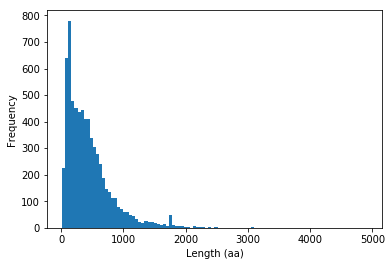
Algoritmos numéricos¶
Introdução (algoritmo babilónico)¶
Um algoritmo é um procedimento, indicado passo a passo, destinado a resolver um problema num intervalo de tempo finito.
Algoritmo para calcular raízes quadradas¶
Para calcular a raíz quadrada de um número a:
- Fazer x = 1
- Fazer x = \frac{1}{2} \left( x + a/x \right)
- Repetir 20 vezes o passo 2
x é a raíz quadrada de a.
a = 2.0 print('a =', a) x = 1.0 for i in range(20): novo = 0.5 * (x + a/x) x = novo print('x =', x)
a = 2.0 x = 1.414213562373095
a = 2.0 x = 1.0 for i in range(20): print(x) novo = 0.5 * (x + a/x) x = novo print("A raíz quadrada de {} é {}".format(a,x))
1.0 1.5 1.4166666666666665 1.4142156862745097 1.4142135623746899 1.414213562373095 1.414213562373095 1.414213562373095 1.414213562373095 1.414213562373095 1.414213562373095 1.414213562373095 1.414213562373095 1.414213562373095 1.414213562373095 1.414213562373095 1.414213562373095 1.414213562373095 1.414213562373095 1.414213562373095 A raíz quadrada de 2.0 é 1.414213562373095
Algoritmo para calcular raízes quadradas
Para calcular a raíz quadrada de um número a:
- Fazer x_0 = 1
- Fazer x_{i+1} = \frac{1}{2} \left( x_i + a/x_i \right)
- Repetir o passo 2 até |x_{i+1} - x_i| < 10^{-10}
x é a raíz quadrada de a.
a = 2.0 x = 1.0 for i in range(100): print(x) novo = 0.5 * (x + a/x) if abs(novo - x) < 1e-10: x = novo break x = novo print("A raíz quadrada de {} é {}".format(a,x))
1.0 1.5 1.4166666666666665 1.4142156862745097 1.4142135623746899 A raíz quadrada de 2.0 é 1.414213562373095
def babilonico(a, show_iters=False): x = 1.0 for i in range(100): if show_iters: print(x) novo = 0.5 * (x + a/x) if abs(novo - x) < 1e-10: return novo x = novo return x r = babilonico(2.0, show_iters=True) print("A raíz quadrada de {} é {}".format(2.0,r))
1.0 1.5 1.4166666666666665 1.4142156862745097 1.4142135623746899 A raíz quadrada de 2.0 é 1.414213562373095
Método das bisseções sucessivas (para calcular a raíz de uma função)¶
(para calcular a raíz de uma função)
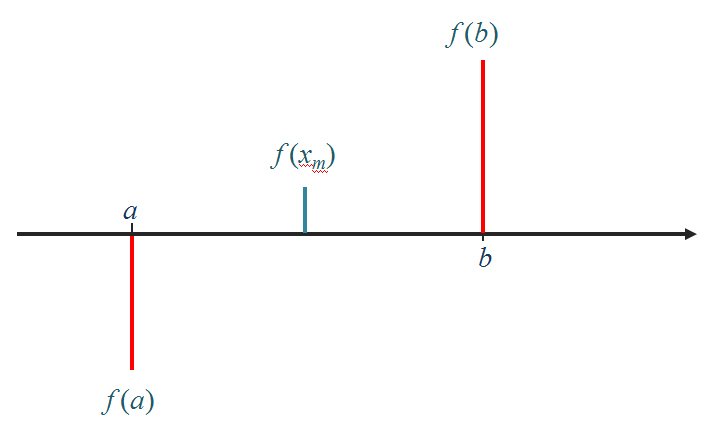
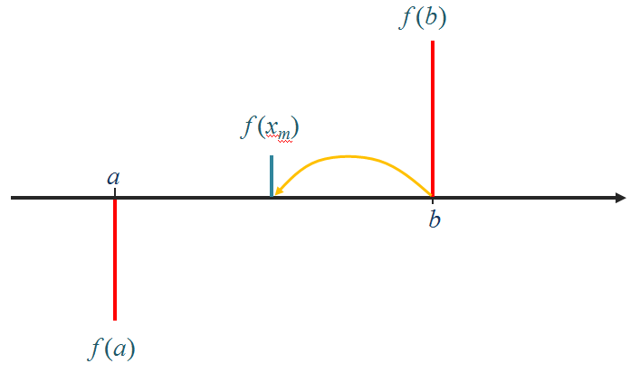
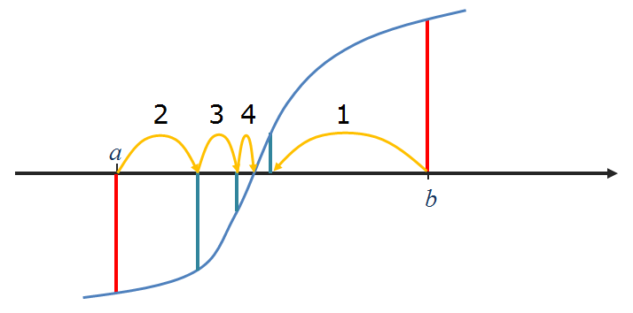
Para calcular a raíz de uma função f(x), contínua sabendo que existe uma raíz no intervalo ]a, b[:
- Calcular o ponto médio x_m = (a+b) / 2 e o valôr da função f(x_m)
- Se o sinal de f(x_m) for igual ao sinal de f(a) então fazer a = x_m. Se o sinal de f(x_m) for igual ao sinal de f(b) então fazer b = x_m
- Repetir o passo 2 até à "convergência":
- Quando |b-a| < \epsilon (um numero pequeno), o processo deve parar ou
- Quando f(x_m) < \epsilon_2 (um numero pequeno), o processo deve parar
x_m é a raíz da função f(x), isto é f(x_m) \approx 0.
def bissect(f, a, b): epsilon = 1e-6 fa, fb = f(a), f(b) while abs(b-a) > epsilon: xm = (a+b)/2.0 fm = f(xm) if fm*fa > 0.0: a,fa = xm,fm else: b,fb = xm,fm return a def f(x): return x**3 -2 x = bissect(f, 1, 2) print("Raíz encontrada:") print(x)
Raíz encontrada: 1.2599201202392578
def bissect(f, a, b): epsilon, epsilonf = 1e-6, 1e-10 fa, fb = f(a), f(b) while abs(b-a) > epsilon: xm = (a+b)/2.0 fm = f(xm) if abs(fm) < epsilonf: return xm, fm if fm*fa > 0.0: a,fa = xm,fm else: b,fb = xm,fm return a, f(a) def f(x): return x**3 -2 x, fx = bissect(f, 1, 2) print("x = {}, f(x) = {:9.7f}".format(x,fx))
x = 1.2599201202392578, f(x) = -0.0000044
Monitorizando as bisseções:
def bissect(f, a, b): epsilon, epsilonf = 1e-6, 1e-10 fa, fb = f(a), f(b) history = [] # Uma lista de listas com a "história" das iterações while abs(b-a) > epsilon: xm = (a+b)/2.0 fm = f(xm) history.append([a,b,fm]) if abs(fm) < epsilonf: return xm, fm, history if fm*fa > 0.0: a,fa = xm,fm else: b,fb = xm,fm return a, f(a), history def f(x): return x**3 -2 x, fx, h = bissect(f, 1, 2) print("x = {}, f(x) = {:9.7f}".format(x,fx)) print(''' Bisseções: a b |b-a| f(xm)''') for a, b, fm in h: print("{0:7.5f} {1:7.5f} {3:10.8f} {2:10.7f}".format(a,b,fm, abs(b-a)))
x = 1.2599201202392578, f(x) = -0.0000044 Bisseções: a b |b-a| f(xm) 1.00000 2.00000 1.00000000 1.3750000 1.00000 1.50000 0.50000000 -0.0468750 1.25000 1.50000 0.25000000 0.5996094 1.25000 1.37500 0.12500000 0.2609863 1.25000 1.31250 0.06250000 0.1033020 1.25000 1.28125 0.03125000 0.0272865 1.25000 1.26562 0.01562500 -0.0100245 1.25781 1.26562 0.00781250 0.0085732 1.25781 1.26172 0.00390625 -0.0007401 1.25977 1.26172 0.00195312 0.0039130 1.25977 1.26074 0.00097656 0.0015855 1.25977 1.26025 0.00048828 0.0004225 1.25977 1.26001 0.00024414 -0.0001588 1.25989 1.26001 0.00012207 0.0001318 1.25989 1.25995 0.00006104 -0.0000135 1.25992 1.25995 0.00003052 0.0000592 1.25992 1.25993 0.00001526 0.0000228 1.25992 1.25993 0.00000763 0.0000047 1.25992 1.25992 0.00000381 -0.0000044 1.25992 1.25992 0.00000191 0.0000001
Método de newton (para calcular a raíz de uma função)¶
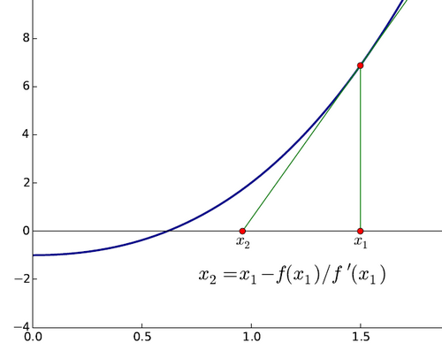
Para calcular a raíz de uma função f(x), conhecendo também a sua derivada f'(x):
- Partir de uma estimativa inicial x_0
- Fazer x_{i+1} = x_i - f(x_i)/f'(x_i)
- Repetir o passo 2 até |f(x_i)| < \epsilon (um numero pequeno)
x_{final} é a raíz da função f(x), isto é f(x_{final}) \approx 0.
NOTA: O algoritmo babilónico é um caso particular do método de Newton para f(x) = x^2 -a
def newton(f, df, x): epsilon = 1e-6 fx, dfx = f(x), df(x) while abs(fx) > epsilon: x = x - fx / dfx fx, dfx = f(x),df(x) return (x, fx)
def f(x): return x**3 -2 def df(x): return 3 * x**2 x, fx = newton(f, df, 1.5) print("x = {}, f(x) = {:9.7f}".format(x,fx))
x = 1.2599210498953948, f(x) = 0.0000000
Monitorizando as iterações:
def newton(f, df, x): epsilon = 1e-6 history = [] fx,dfx = f(x),df(x) while abs(fx) > epsilon: history.append([x,fx]) x = x - fx / dfx fx, dfx = f(x),df(x) return (x, fx, history) def f(x): return x**3 -2 def df(x): return 3 * x**2 x, fx, h = newton(f, df, 1.5) print("x = {}, f(x) = {:9.7f}".format(x,fx)) print(''' Iterações: x f(x)''') for x, fx in h: print("{0:9.7f} {1:9.7f}".format(x, fx))
x = 1.2599210498953948, f(x) = 0.0000000 Iterações: x f(x) 1.5000000 1.3750000 1.2962963 0.1782757 1.2609322 0.0048193 1.2599219 0.0000039
Compare-se a rapidez da convergência dos 2 métodos, para \epsilon = 10^{-6}
Método das bisseções sucessivas:
Bisseções:
a b |b-a| f(xm)
1.00000 2.00000 1.00000000 1.3750000
1.00000 1.50000 0.50000000 -0.0468750
1.25000 1.50000 0.25000000 0.5996094
1.25000 1.37500 0.12500000 0.2609863
1.25000 1.31250 0.06250000 0.1033020
1.25000 1.28125 0.03125000 0.0272865
1.25000 1.26562 0.01562500 -0.0100245
1.25781 1.26562 0.00781250 0.0085732
1.25781 1.26172 0.00390625 -0.0007401
1.25977 1.26172 0.00195312 0.0039130
1.25977 1.26074 0.00097656 0.0015855
1.25977 1.26025 0.00048828 0.0004225
1.25977 1.26001 0.00024414 -0.0001588
1.25989 1.26001 0.00012207 0.0001318
1.25989 1.25995 0.00006104 -0.0000135
1.25992 1.25995 0.00003052 0.0000592
1.25992 1.25993 0.00001526 0.0000228
1.25992 1.25993 0.00000763 0.0000047
1.25992 1.25992 0.00000381 -0.0000044
1.25992 1.25992 0.00000191 0.0000001
Método de Newton:
Iterações:
x f(x)
1.5000000 1.3750000
1.2962963 0.1782757
1.2609322 0.0048193
1.2599219 0.0000039
Método de Newton com a função sin(x)
from math import sin, cos, pi def f(x): return sin(x) def df(x): return cos(x) def newton(f, df, x): epsilon = 1e-6 history = [] fx,dfx = f(x),df(x) while abs(fx) > epsilon: history.append([x,fx]) x = x - fx / dfx fx, dfx = f(x),df(x) return (x, fx, history) for x0 in 0.1, 1.1, 3.1, 4.1, 5.1, 6.1, 12.1: x, fx, h = newton(f, df, x0) pi_x = x / pi print("x0 = {:<7.2f} x = {:4.1f} pi".format(x0, pi_x))
x0 = 0.10 x = 0.0 pi x0 = 1.10 x = 0.0 pi x0 = 3.10 x = 1.0 pi x0 = 4.10 x = 1.0 pi x0 = 5.10 x = 58.0 pi x0 = 6.10 x = 2.0 pi x0 = 12.10 x = 4.0 pi
def f(x): return sin(x) def df(x): return cos(x) def newton(f, df, x): epsilon = 1e-6 history = [] fx,dfx = f(x),df(x) while abs(fx) > epsilon: history.append([x,fx]) x = x - fx / dfx fx, dfx = f(x),df(x) return (x, fx, history) for x0 in 0.1, 1.1, 3.1, 4.1, 5.1, 6.1, 12.1: print('----------------\nx0 = {}'.format(x0)) x, fx, h = newton(f, df, x0) for x,fx in h: print('x = {:8.5f}, f(x)={:8.5f}'.format(x,fx)) pi_x = x / pi print("para x0 = {}, x = {:4.1f} pi".format(x0, pi_x))
---------------- x0 = 0.1 x = 0.10000, f(x)= 0.09983 x = -0.00033, f(x)=-0.00033 para x0 = 0.1, x = -0.0 pi ---------------- x0 = 1.1 x = 1.10000, f(x)= 0.89121 x = -0.86476, f(x)=-0.76094 x = 0.30804, f(x)= 0.30319 x = -0.01013, f(x)=-0.01013 para x0 = 1.1, x = -0.0 pi ---------------- x0 = 3.1 x = 3.10000, f(x)= 0.04158 x = 3.14162, f(x)=-0.00002 para x0 = 3.1, x = 1.0 pi ---------------- x0 = 4.1 x = 4.10000, f(x)=-0.81828 x = 2.67647, f(x)= 0.44853 x = 3.17831, f(x)=-0.03671 x = 3.14158, f(x)= 0.00002 para x0 = 4.1, x = 1.0 pi ---------------- x0 = 5.1 x = 5.10000, f(x)=-0.92581 x = 7.54939, f(x)= 0.95397 x = 4.36848, f(x)=-0.94144 x = 1.57632, f(x)= 0.99998 x = 182.69881, f(x)= 0.46748 x = 182.16999, f(x)=-0.04237 x = 182.21240, f(x)= 0.00003 para x0 = 5.1, x = 58.0 pi ---------------- x0 = 6.1 x = 6.10000, f(x)=-0.18216 x = 6.28526, f(x)= 0.00208 para x0 = 6.1, x = 2.0 pi ---------------- x0 = 12.1 x = 12.10000, f(x)=-0.44965 x = 12.60341, f(x)= 0.03703 x = 12.56635, f(x)=-0.00002 para x0 = 12.1, x = 4.0 pi
%matplotlib inline
from matplotlib import pyplot as pl import matplotlib as mpl from numpy import linspace, sin, cos
x = linspace(-6, 10, 1000) y = sin(x) pl.axhline(color='black', linewidth=3) pl.plot(x,y, color='teal', linewidth=3) for z in range(-1, 4): pl.axvline(x = z * pi, color='black', linestyle=':', ymin=0.25, ymax=0.75)
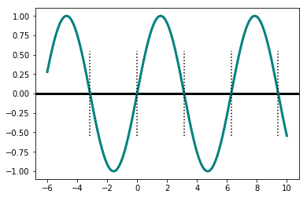
mpl.rcParams['figure.figsize'] = (10,6) def f(x): return sin(x) def df(x): return cos(x) def newton_points(h): # h = [(x0, fx0), (x1, fx1), ...] xvalues = [] yvalues = [] for x, y in h: xvalues.extend([x,x]) yvalues.extend([0,y]) return xvalues,yvalues x = linspace(-1, 4, 1000) y = sin(x) pl.axhline(color='darkred') pl.plot(x,y, color='black', linewidth=2) for x0, color in [(0.5,'green'), (1.1, 'darkred'), (2.2, 'teal')]: x, fx, h = newton(f, df, x0) print('Para x0 = {}, raíz = {:6.3f}'.format(x0, x)) xpoints, ypoints = newton_points(h) pl.plot(xpoints, ypoints, color=color, linewidth=2)
Para x0 = 0.5, raíz = -0.000 Para x0 = 1.1, raíz = 0.000 Para x0 = 2.2, raíz = 3.142
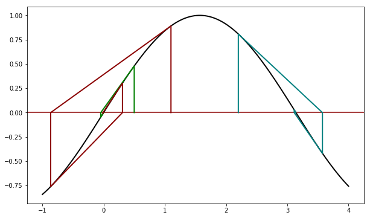
def f(x): return sin(x) def df(x): return cos(x) x = linspace(-1, 10, 1000) y = sin(x) pl.axhline(color='darkred') pl.plot(x,y, color='black', linewidth=2) for x0, color in [(5.1,'green')]: x, fx, h = newton(f, df, x0) print('Para x0 = {}, raíz = {:6.3f}'.format(x0, x)) xpoints, ypoints = newton_points(h) pl.plot(xpoints, ypoints, color=color, linewidth=2) pl.xlim(-1,10)
Para x0 = 5.1, raíz = 182.212
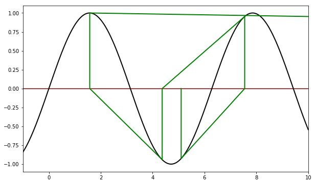
def f(x): return sin(x) def df(x): return cos(x) x = linspace(180, 185, 1000) y = sin(x) pl.axhline(color='darkred') pl.plot(x,y, color='black', linewidth=2) for x0, color in [(5.1,'green')]: x, fx, h = newton(f, df, x0) print('Para x0 = {}, raíz = {:6.3f}'.format(x0, x)) xpoints, ypoints = newton_points(h) pl.plot(xpoints, ypoints, color=color, linewidth=2) pl.xlim(180,185)
Para x0 = 5.1, raíz = 182.212
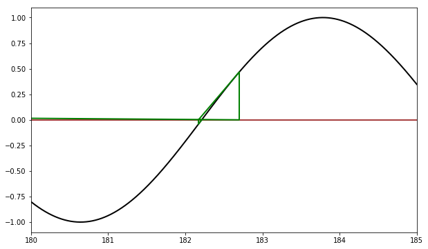
def plot_newton(x0): def f(x): return sin(x) def df(x): return cos(x) x = linspace(-1, 10, 1000) y = sin(x) pl.axhline(color='darkred') pl.plot(x,y, color='black', linewidth=2) color = 'green' x, fx, h = newton(f, df, x0) x_pi = x / pi xpoints, ypoints = newton_points(h) pl.plot(xpoints, ypoints, color=color, linewidth=2) pl.xlim(-1,10) pl.grid() #pl.show() #print('Para x0 = {}, raíz = {:4.2f} pi'.format(x0, x_pi))
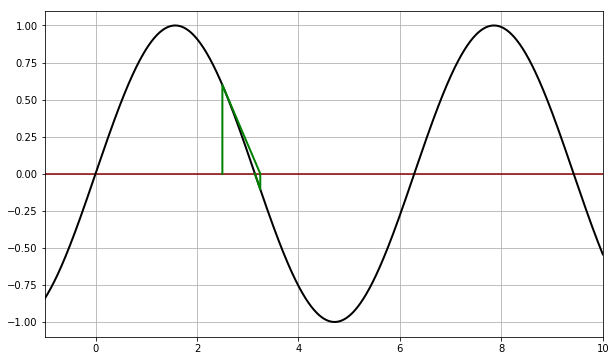